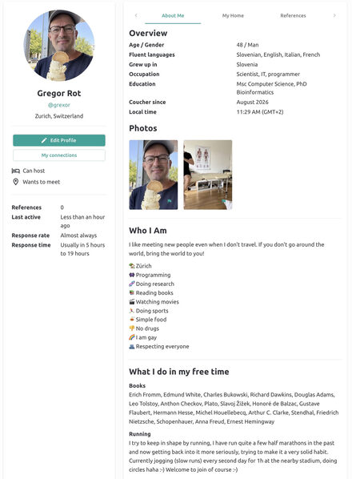

The pattern seems to be repeating. There is a good, noble idea. There is an implementation, free and accessible. Users start to join. Many users start to join. The interest of capital is aroused. Slowly things get more and more weird. Useless features are added, things don't work anymore or work very slowly. An idea of a subscription appears, to improve things, to make it "professional". Things go down. Users leave. There is a good, noble idea. And the story... repeats? Let's hope not with Couchers! :-) But read on...
Couchsurfing.org was a platform with a great idea: open your home to strangers, for free — let them use your place, your couch, your kitchen, the flat in general — and get to know fellow travelers.
I remember joining in 2008 in Ljubljana, and until a few years ago the platform worked great. Then it somehow became for-profit and the problems started. First, the website was not very responsive and became slow. Then they wanted a yearly subscription. That I also somehow tolerated, and chipped in, with the idea that they would recover — ok, with contributions from members, perhaps the IT infrastructure and website would be better maintained and start working properly again. Boy, was I wrong.
In 2026, Couchsurfing happily announced a complete rebuild of the website and mobile app. A complete disaster. I could not log in for a month, and then they slowly started fixing problems. To this day, the website and app are hardly usable. I take this as an example of how a company adds several features users do not need and, in the process, destroys the functionality of features that worked, completely screwing up the design and flow of the app.
Horror of horrors — I was emotionally really attached to the idea of Couchsurfing, with ~100 references there and many nice memories. I was hosting people in Ljubljana and Zürich, and was also traveling all over, using Couchsurfing to stay with and meet locals. Simply, it was very very sad to see such a good idea degenerate into a weird, for-profit, unusable concept.
But after being sad for some time, I heard about Couchers by chance (someone mentioned it in a video, I think — a Serbian YouTuber traveling the world almost without money). And this one, in terms of accessibility, usability, design and concept, is a winning story. I feel very happy; the only thing I miss is the ability to transfer all those references from Couchsurfing to Couchers. Happy couching! And if you are a developer, you can volunteer and contribute to the platform: https://couchers.org/volunteer